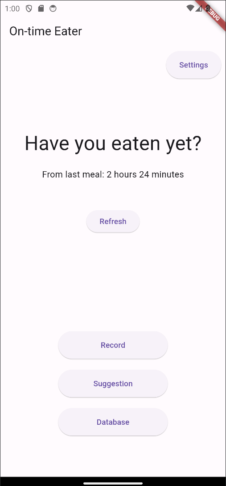
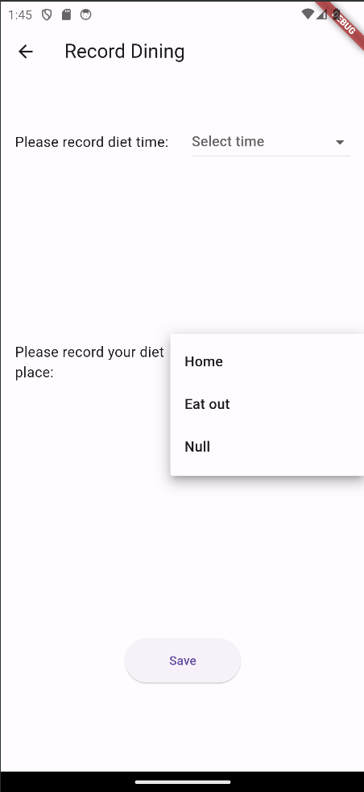
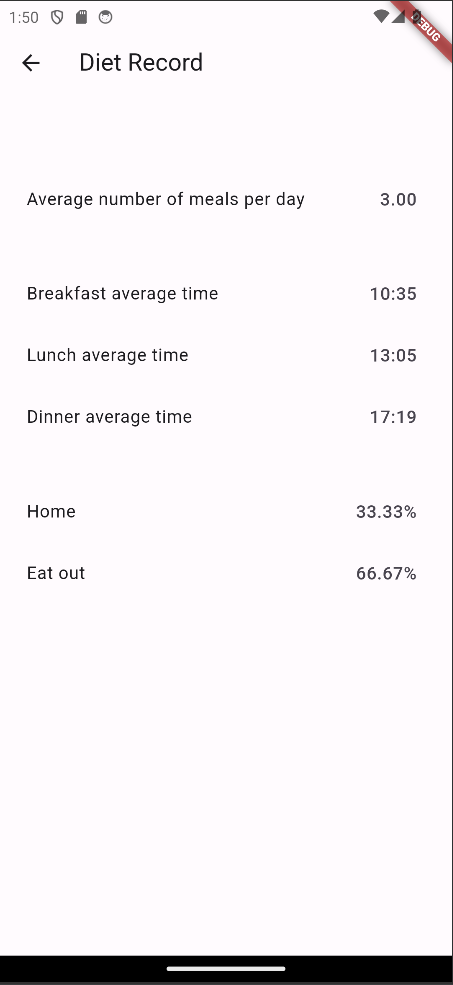
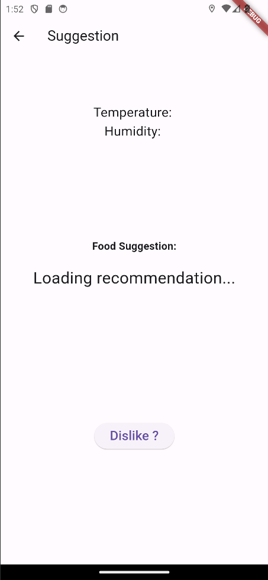

Welcome to On-time Eater, this is an app that can record eating time and place, remind users how long it has been since last meal to eat, and provide suggestions on food types.

In the record page, you can freely choose the place and time of eating, and permanently stored in the local data, the data is not uploaded to the network, do not worry about data leakage problems!

You can see in your own database, the average time of three meals, the average number of meals per day and the percentage of places to eat, giving you a clearer picture of your own diet!

Don't know what to eat? Don't worry, the App will automatically recommend the right food for you based on your environmental data. Don't like it? No problem. One click to re-recommend it.
On-time Eater, help you with a healthier diet!